Tefsir & Hadis Kütüphanesi
Tefsir & Hadis Kütüphanesiاقْرَأْ بِاسْمِ رَبِّكَ الَّذِي خَلَقَ
Kur'an'ı tefsirleriyle,
hadisi senediyle okuyun
60 tefsir, 17 hadis kitabı, 17 şerh, 8 kadim sözlük ve 29 kâri tek bir programda. Okuyun, dinleyin, ezberleyin, araştırın ve paylaşın. Ücretsiz; kurulduktan sonra internet gerektirmez.
Windows için ücretsiz indirTanıtım videosu (3 dk) · Seslendirme: Microsoft Türkçe sinir ağı sesi · Tilâvet: Mahmûd Halîl el-Husarî (EveryAyah)
Kur'an
Bir âyeti açtığınızda Arapça metni, meali ve seçtiğiniz tefsirler aynı ekranda gelir.
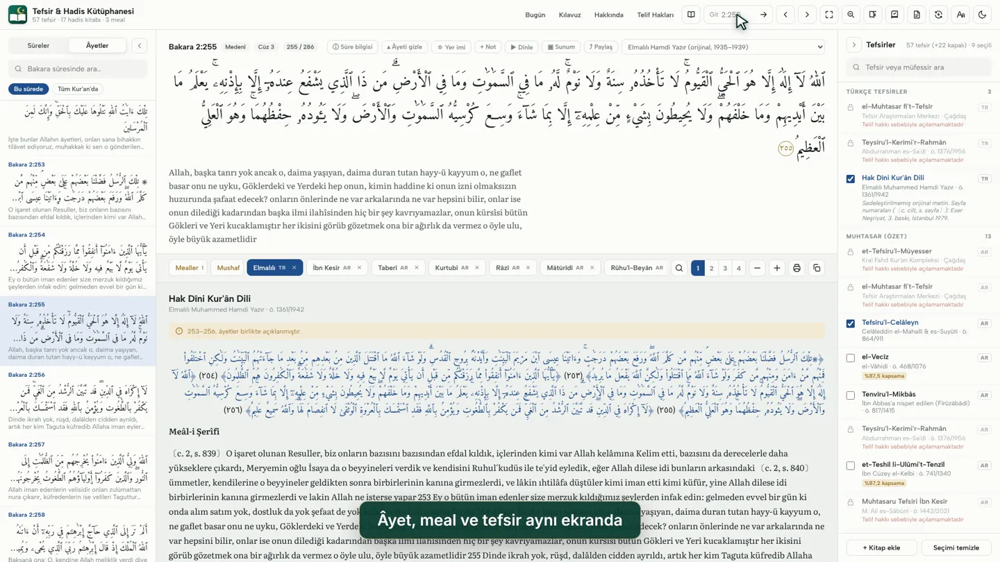
60 tefsir, tek tıkla
Taberî'den Elmalılı'ya; rivâyet, dirâyet ve işârî tefsirler, her biri âyetin yanında.
- Sekmelerle geçiş: Taberî, Kurtubî, Râzî, İbn Kesîr, Elmalılı…
- Üç Türkçe meal: Elmalılı (1935), Kral Fahd Kompleksi, Ravvâd Merkezi
- Sunum modu: cami dersi ve projeksiyon için büyük yazılı tam ekran
- Not, vurgu, yer imi; Word ve PDF olarak dışa aktarma
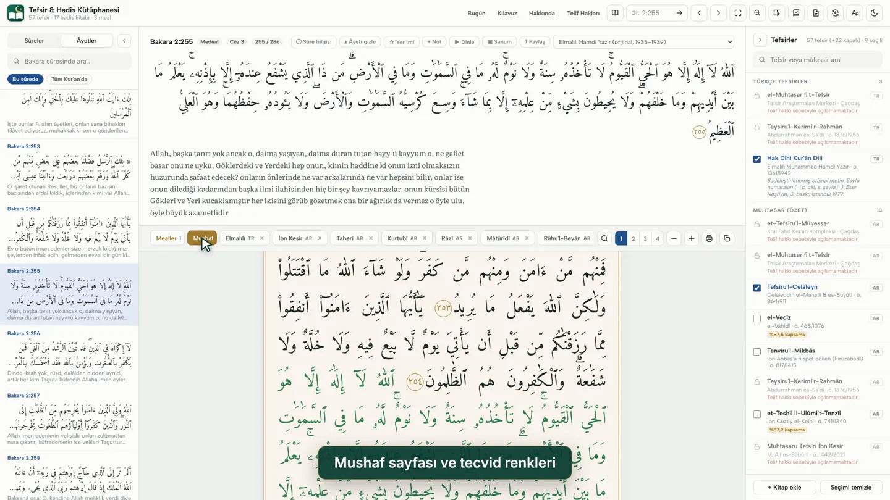
Medine mushafının sayfa düzeni
604 sayfa, matbu satır sonları ve tezhipli sûre başlıklarıyla; tecvid renkleri isteğe bağlı.
- Türkiye mushafı işaretleri: yuvarlak sükûn, alışılmış tenvîn (istenirse Medine yazımı)
- Kral Fahd Kompleksi'nin Hafs yazı tipi
- Okuma planı ve hatim: günlük hedef, seri ve ilerleme
Dinleyin, ezberleyin
29 kâri, telefonda tam ekran okuma ve ezberi kalıcı kılan bir tekrar takvimi.
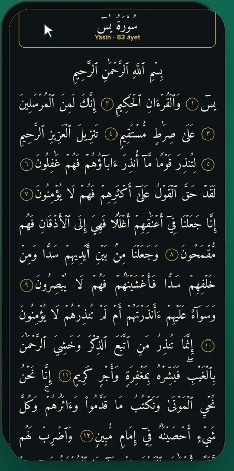
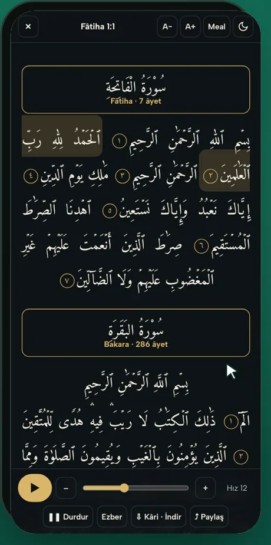
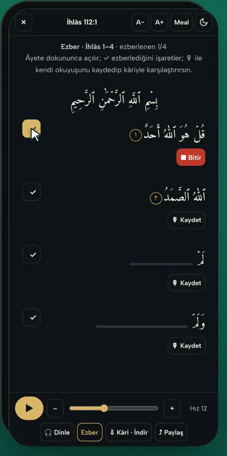
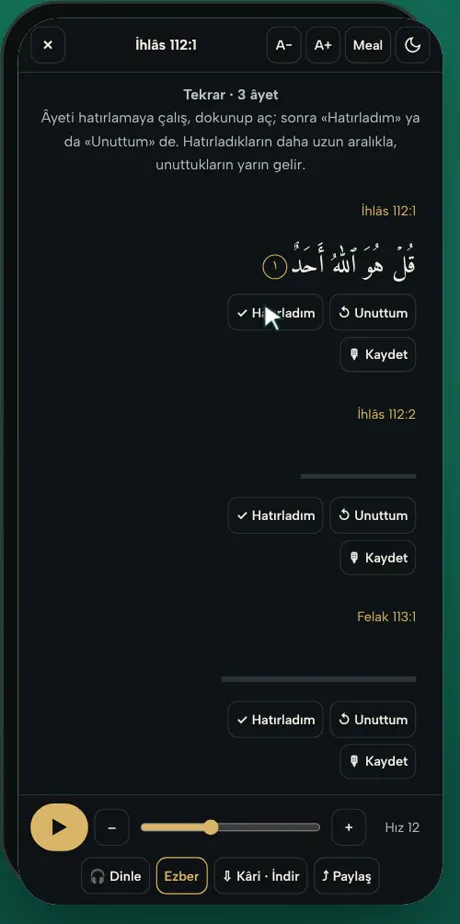
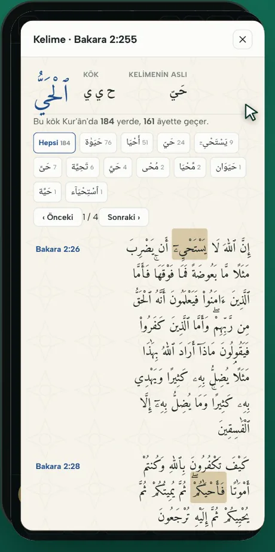
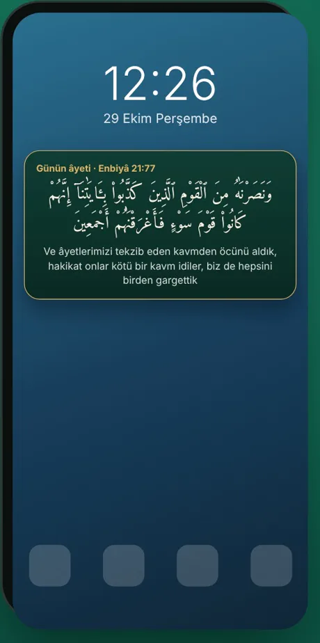
29 kâri
Afâsî, Husarî, Abdülbâsıt, Minşâvî, Sudeys, Şüreym, Şâtırî, Gāmidî ve diğerleri; mücevved ve muallim okuyuşlar dahil. Her âyet istenen kadar tekrarlanır.
İnternetsiz dinleme
Bulunduğunuz sûreyi, cüzü ya da bütün Kur'an'ı seçtiğiniz kâriden indirin; yolda da dinleyin.
Kendi sesinizle
Ezber ekranında okuyuşunuzu kaydedin, kâriyle arka arkaya dinleyip karşılaştırın. Kayıtlar yalnız cihazınızda kalır.
Hadis
17 kitap, 183.373 hadis; senedi, şerhi, râvileri ve âlimlerin hükümleriyle.

Her râvi işaretli
Senetteki râvilere dokunun; kadim münekkitlerin hükümleri hadisin hemen altında.
- Kütüb-i Sitte, Muvatta, Müsned, Dârimî, Müstedrek, İbn Hibbân, İbn Huzeyme, Musannefler, Beyhakî, Mecmaʿu'z-Zevâid
- Rivâyet karşılaştırma: aynı hadisin farklı lafızları
- Tahrîc raporu (Word) ve hadis notları
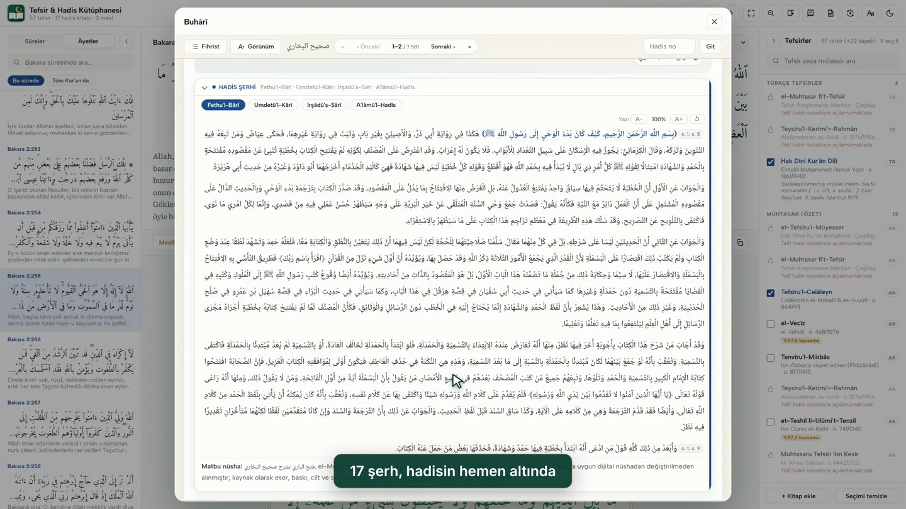
17 şerh, hadisin altında
Fethu'l-Bârî, Umdetü'l-Kārî, el-Minhâc, Avnü'l-Ma'bûd, Tuhfetü'l-Ahvezî…
- Şerhlerde arama
- Cilt ve sayfa bilgisiyle; kaynak olarak gösterilebilir
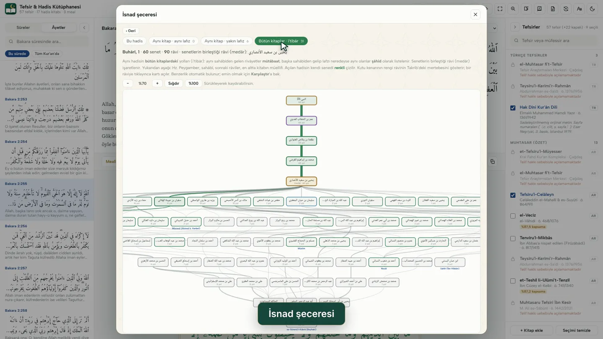
İsnad şeceresi
Bir hadisin bütün kitaplardaki senetleri tek ağaçta; ortak râvi (medâr) işaretli.
- İki râvi arasındaki bağlantı
- Konu fihristi: hadisler konulara göre
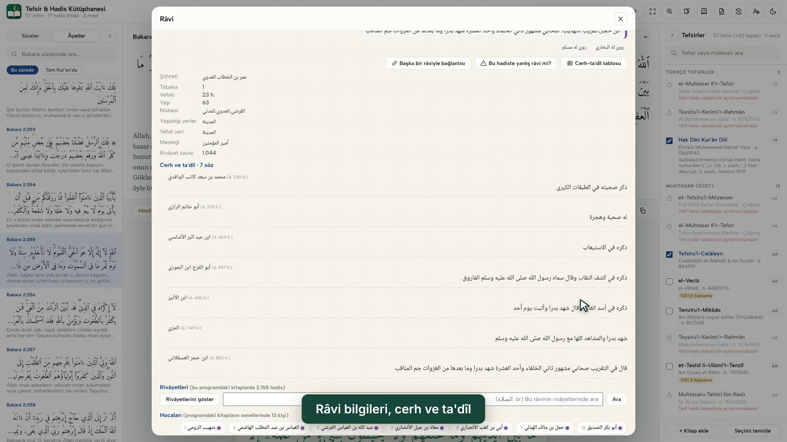
Râvi bilgileri
Hocaları, talebeleri, tabakası, vefatı ve cerh-ta'dîl sözleri; Takrîb, Tehzîb, Kâşif ve Mîzân kayıtları.
- Râvinin bütün rivâyetleri ve içinde arama
- Senette yanlış eşleşen râviyi tek tıkla bildirme
Sözlük, arama, paylaşma
Merak ettiğiniz kelime, aradığınız ifade, sevdiklerinize göndermek istediğiniz âyet.
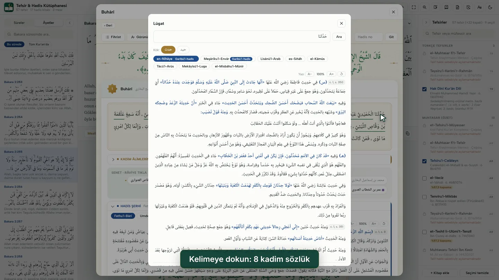
Kelimeye dokunun
en-Nihâye, Lisânü'l-Arab, Tâcü'l-Arûs, el-Kāmûs… sekiz kadim sözlük; garîb kelimeler işaretli.
- Meşâriku'l-Envâr ve el-Fâik ile garîbü'l-hadîs
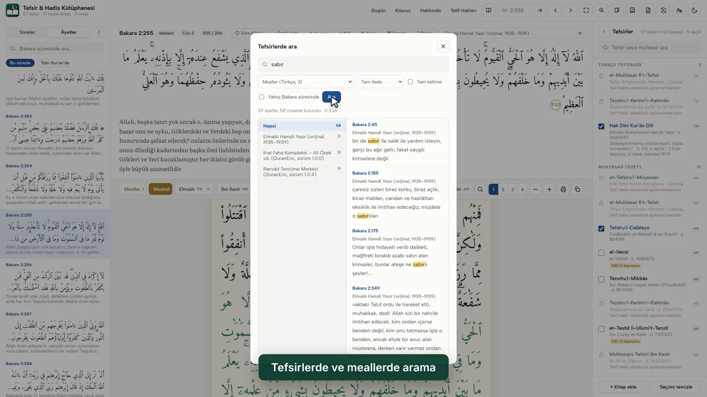
Tefsirlerde ve meallerde arama
Arapça ya da Türkçe bir kelime, bütün tefsirlerde ve meallerde saniyeler içinde.
- Tam ifade ya da bütün kelimeler; esere göre süzme
- Meallerde harf farkı gözetilmez: «sabir» «sabır»ı da bulur
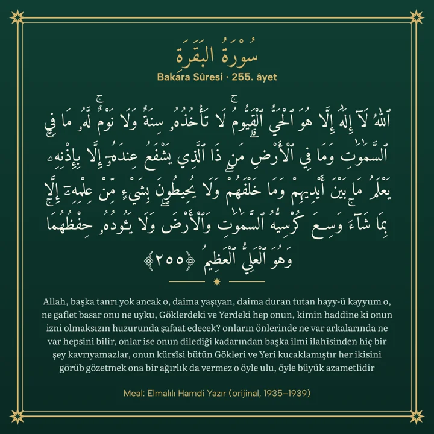
Âyet ve hadis kartı
Bir âyeti mealiyle, bir hadisi kitabı ve numarasıyla şık bir görsel hâline getirin.
- Kare, dikey, hikâye biçimleri; dört renk
- Telefonda WhatsApp ve Instagram'a; bilgisayarda kaydet ya da kopyala
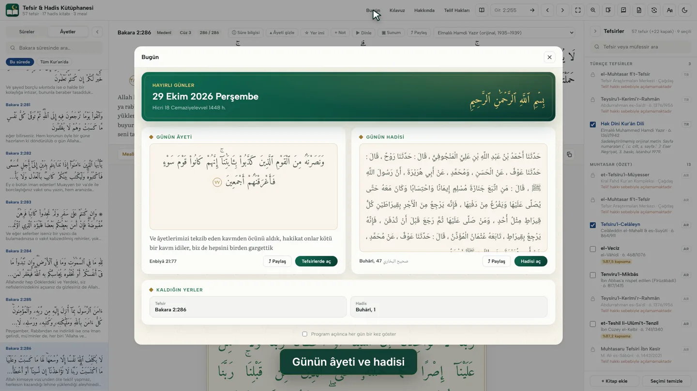
Her gün bir âyet, bir hadis
Program sizi günün âyeti ve hadisiyle karşılar; kaldığınız yeri ve son notlarınızı hatırlatır.
- Telefonun ana ekranında da günün âyeti
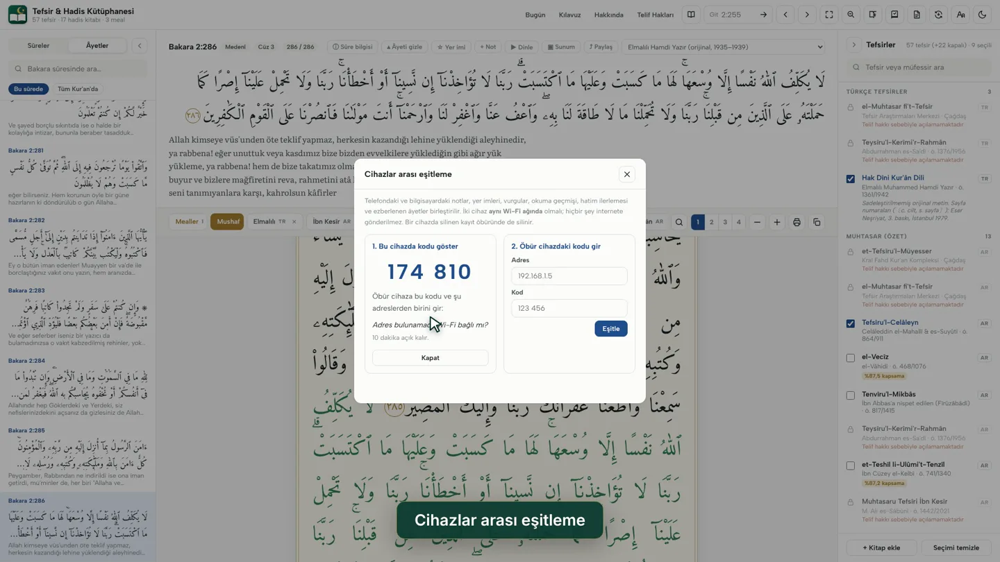
Telefon ve bilgisayar birlikte
Aynı Wi-Fi'de 6 haneli bir kodla notlar, yer imleri, vurgular, hatim ve ezber eşitlenir.
- İnternete ve hiçbir sunucuya bir şey gönderilmez
- Tek dosyalık yedek ve geri yükleme
Her cihazda
Windows, Mac, Linux ve Android. Telefon uygulaması bilgisayardaki programın aynısıdır; bütün kitaplar ve özellikler telefonda da var.
Windows
Windows 10 ve 11, 64 bit. Kurulum veri paketlerini kendisi indirir; güncellemeler program içinden gelir.
Android
Android 8.0 ve üstü telefon ve tabletler. Güncellemeler uygulamanın içinden kurulur; ana ekranda günün âyeti.
Mac ve Linux
Apple Silicon (M1–M4) ve Intel Mac'ler; 64 bit Linux. Veriler ilk açılışta iner.
Kütüphane
Bütün metinler matbu nüshalara dayanır; şerh ve sözlüklerde cilt ve sayfa verilir, kaynak olarak gösterilebilir.
Türkçe
Elmalılı Muhammed Hamdi Yazır, Hak Dîni Kur'ân Dili (ilk baskı, 1935–1939). Mealler: Elmalılı, Kral Fahd Kompleksi, Ravvâd Tercüme Merkezi
Rivâyet tefsirleri · 11
Taberî, İbn Ebî Hâtim, İbn Kesîr, Suyûtî (ed-Dürrü'l-Mensûr), Begavî, Sa'lebî, Mukātil…
Dirâyet tefsirleri · 26
Mâtürîdî, Zemahşerî, Râzî, Kurtubî, Beyzâvî, Nesefî, Ebû Hayyân, Ebüssuûd, Âlûsî, Şevkânî…
İşârî tefsirler · 9
Tüsterî, Sülemî, Kuşeyrî, Baklî, Necmeddîn-i Kübrâ, Kâşânî, Rûhu'l-Beyân, İbn Acîbe…
Muhtasar ve diğerleri · 13
Celâleyn, Vâhidî, İbn Cüzey, Menâr, Süfyân es-Sevrî, Nesâî, İbn Arafe, ed-Dürrü'l-Masûn…
Hadis · 17 kitap
Kütüb-i Sitte, Muvatta, Müsned, Dârimî, Müstedrek, İbn Hibbân, İbn Huzeyme, Musannefler, Beyhakî'nin es-Sünenü'l-Kübrâ'sı, Mecmaʿu'z-Zevâid
Şerhler · 17
Fethu'l-Bârî, Umdetü'l-Kārî, İrşâdü's-Sârî, el-Minhâc, Avnü'l-Ma'bûd, Tuhfetü'l-Ahvezî…
Sözlükler · 8
en-Nihâye, Lisânü'l-Arab, Tâcü'l-Arûs, el-Kāmûsü'l-Muhît, es-Sıhâh, Mekāyîsü'l-Luga, el-Misbâhu'l-Münîr, Meşâriku'l-Envâr
Tilâvet · 29 kâri
EveryAyah kayıtları: Afâsî, Husarî (murattal, mücevved, muallim), Abdülbâsıt, Minşâvî, Sudeys, Şüreym, Şâtırî…
İndirin ve kurun
Tek dosya indirmeniz yeter; gereken veriler kendiliğinden iner ve her dosyanın doğruluğu denetlenir.
- Windows: Kurulum.exe'yi indirip çalıştırın. Kurulum tefsir verilerini, hadis kitaplarını ve seçerseniz şerh ve sözlük paketlerini internetten indirir.
- Android: Tefsir-Hadis-Android.apk dosyasını telefonda açıp kurun (bilinmeyen kaynaklara bir kez izin vermeniz istenebilir). Veriler ilk açılışta bir kez iner.
- Mac ve Linux: Apple Silicon · Intel · Linux. Paketi açıp programı çalıştırın; veriler ilk açılışta iner.
Windows uyarı verirse: Program henüz bir yayıncı sertifikasıyla imzalanmadığı için Windows "bilgisayarınızı korudu" diyebilir. Ek bilgi › Yine de çalıştır ile devam edebilirsiniz.
Bütün sürümler ve yenilikler: Sürüm notları.
Sık sorulan sorular
Ücretli mi?
Hayır. Program ve bütün kitaplar ücretsizdir; reklam yoktur.
İnternet gerekiyor mu?
Yalnız kurulumda ve ilk açılışta veriler bir kez iner; sonra program internetsiz çalışır. Tilâvet bir âyeti ilk dinleyişte internetten alır; dilerseniz sûreyi, cüzü ya da bütün Kur'an'ı önceden indirebilirsiniz.
Bilgilerim bir yere gönderiliyor mu?
Hayır. Notlarınız, ezberleriniz ve ses kayıtlarınız yalnız cihazınızda durur. Program yalnız hangi bölümün kullanıldığını isimsiz olarak sayar; Görünüm ayarlarından kapatılabilir. Eşitleme de yalnız aynı Wi-Fi ağındaki iki cihaz arasında olur.
Telefonla bilgisayarı nasıl eşitlerim?
İki cihaz aynı Wi-Fi'deyken Notlar › Eşitle. Telefonda «Kodu göster» deyin; bilgisayara telefonun adresini ve 6 haneli kodu girin.
iPhone'da çalışır mı?
Şimdilik hayır; Windows, Mac, Linux ve Android sürümleri var.
Neden bazı çağdaş tefsir ve mealler kapalı?
Telif hakkı süren eserler hak sahiplerinden izin alınmadan konmaz; adları listede görünür, izin alındıkça açılır.
Hata bulursam ne yapayım?
Program içindeki «Hata bildir» ya da senetteki «yanlış râvi» düğmesiyle, ya da tefsirhadiskutuphanesi@gmail.com adresine yazarak bildirebilirsiniz.
Telif hakları
Klasik eserlerin müellifleri yüzyıllar önce vefat etmiştir; muhakkik dipnotları, mukaddimeler ve ekler alınmamıştır.
Telif hakkı koruması süren çağdaş tefsir ve mealler programda adıyla listelenir, ancak metinleri programa konmamıştır ve açılmaz. Hak sahiplerinden izin alındıkça açılacaktır. Hak sahibiyseniz tefsirhadiskutuphanesi@gmail.com adresine yazın.